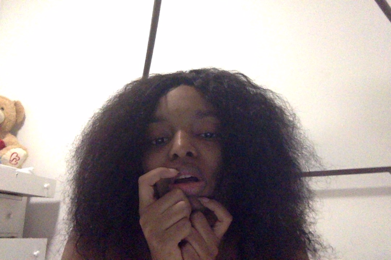

Taking a Selfie
- Everyone take out your phone
- Go to your camera or whatever app you use to take pictures
- Turn the camera to face front
- And take a selfie
Take your selfie on however you usually take your selfies.
This shows that everyone has their own distinct way of taking selfies and even though everyone is doing the same thing, the results will be completely different.
First and foremost, no one’s face is the same. The result will be different in the end no matter what.
Second, the way the picture was taken. Maybe, some people try to use natural light and try to find the perfect spot, or try to angle the phone in different ways to find their “perfect angle.”
Maybe some people don't like to smile when they take their selfies, or don't like to smile with their teeth showing.
Some people might like to show their teeth or make faces because they feel uncomfortable without making a goofy face.
In the end, the result will be that everyone has taken a selfie and everyone followed the instructions as written.
However, there is no right or wrong ending for this.
It was just to simply show that everyone is different in how they express themselves.
